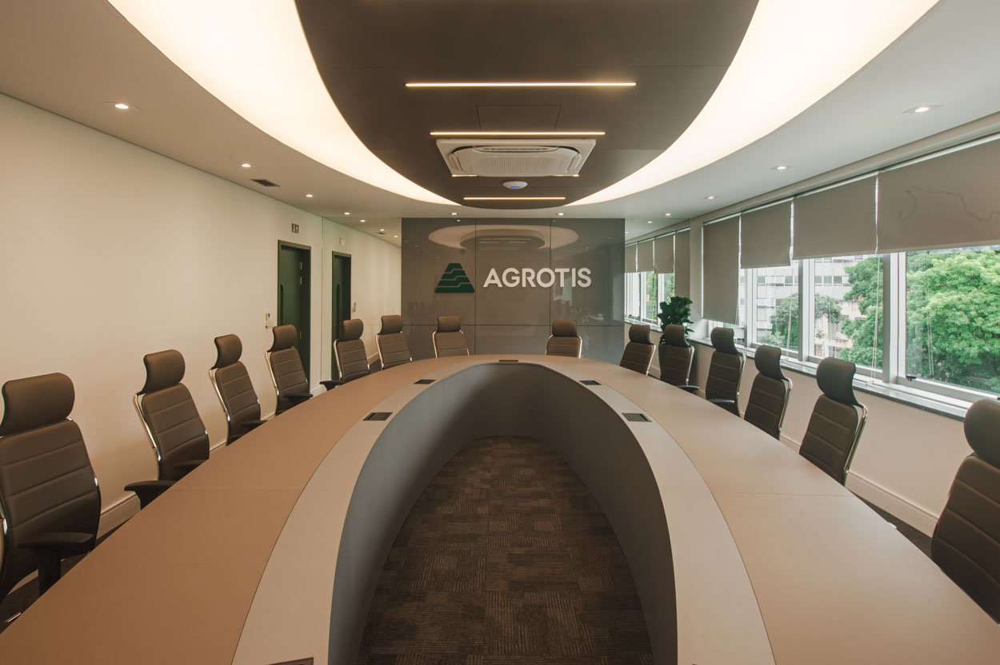
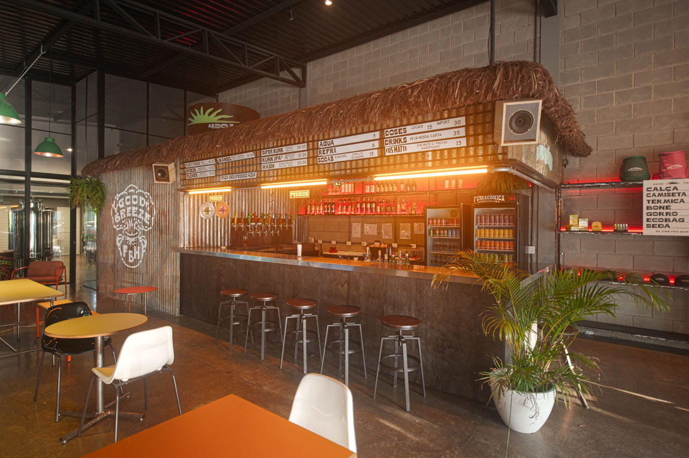
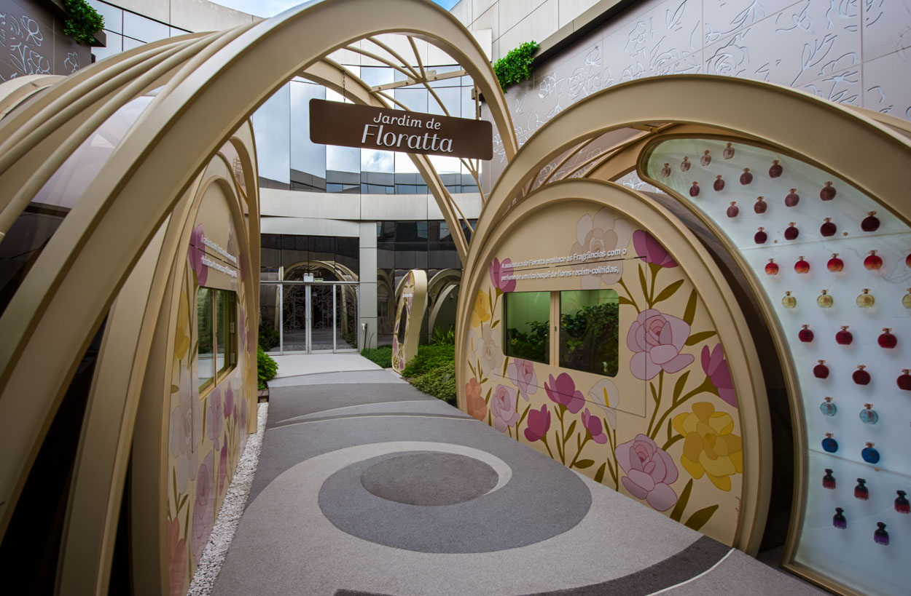
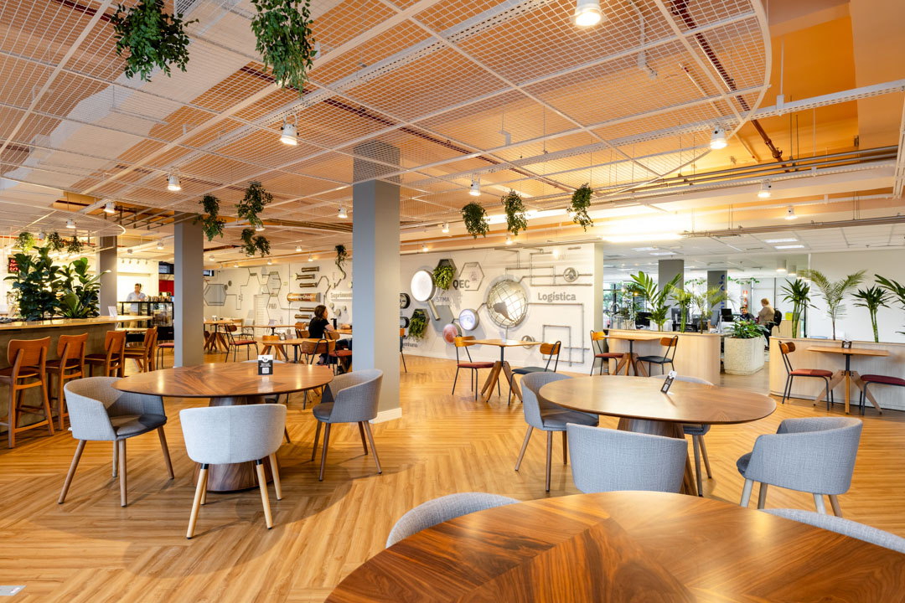

A9 ARQUITETURA PARA RESULTADOS
Inteligência
Espacial
Estratégia, funcionalidade e experiência para orientar cada espaço, do projeto à obra.

UM PERCURSO MAIS CLARO
O que você procura?
Escolha uma direção para ver um projeto relacionado. A seleção muda a prova, sem tirar você do caminho.
ARQUITETURA CORPORATIVA
Reforma de escritório: Agrotis
Uma referência visual para pensar ambientes de trabalho com estratégia, funcionalidade e experiência.
Conheça os projetosProjeto corporativo selecionado.
DO PROJETO À OBRA
Uma visão que
conecta.
Inteligência Espacial é a forma de aproximar estratégia, funcionalidade e experiência em uma mesma conversa.
- AEstratégia
Entender o que o espaço precisa comunicar.
- BFuncionalidade
Organizar possibilidades com clareza.
- CExperiência
Levar a intenção do projeto à obra.
REPERTÓRIO
Arquitetura para diferentes contextos.
Conheça os campos de atuação e os serviços nomeados pela A9.
SELEÇÃO VISUAL
Espaços que dão forma
à intenção.



A9 ARQUITETURA
Atuação em diferentes
cidades do Brasil.
Uma arquitetura que observa o espaço como parte da estratégia, da função e da experiência.
PRÓXIMO PASSO
Vamos conversar?
Conte o que você procura para um espaço. O contato acontece no canal oficial da A9.
Entrar em contato